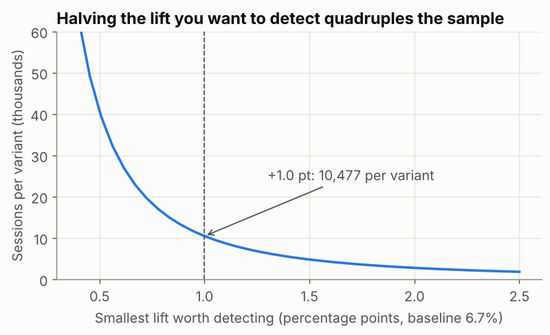

A/B Testing Part 2: Sample Size, Peeking and Causal Pitfalls
Size an experiment before it starts with a power analysis, see why checking results every day breaks your p-values, and learn the causal traps — confounding, selection and novelty — that fool analyses without randomisation.
Before you start
- data-science-scripts.zipAll 21 Phase 2 lesson scripts (NumPy to research thinking), shared chart style, data folder and solutions · 230 KB
- ab_test_checkout.csv10,836 portal sessions from a November A/B test of a one-page checkout (variant, device, converted, order value) · 377 KB
- orders_2025.csv4,246 clean orders for 2025 (synthetic, fixed seed): region, segment, channel, product, price, discount, status, delivery days, revenue · 472 KB
What is it?
| Topic | Question |
|---|---|
| Sample size | How much data do we need to reliably detect the smallest effect worth acting on? |
| Causal pitfalls | What can make us believe X causes Y when it doesn’t, especially without randomisation, or when we analyse an experiment badly? |
Why it matters at work
Most failed experiments are failed designs: too small to detect anything, stopped early on a lucky day, or analysed on whatever metric looked best. And most “insights” from dashboards are correlations that a confounder explains. Spotting these is what makes an analyst’s recommendations safe to act on.
The script is 14_ab_sample_size_pitfalls.py.
Part 1: sample size and power
Four numbers decide the sample size:
| Input | Our choice | Meaning |
|---|---|---|
| Baseline rate | 6.7% | Current conversion |
| Minimum detectable effect (MDE) | +1.0 point | The smallest lift worth shipping |
| α (significance level) | 0.05 | Accepted false-positive rate |
| Power (1 − β) | 80% | Chance of detecting the MDE if it’s real |
from statsmodels.stats.power import NormalIndPower
from statsmodels.stats.proportion import proportion_effectsize
baseline, mde = 0.067, 0.010
effect = proportion_effectsize(baseline + mde, baseline) # Cohen's h
n_per_group = NormalIndPower().solve_power(effect_size=effect, alpha=0.05, power=0.80, ratio=1.0)
print(f"Cohen's h = {effect:.4f} -> {np.ceil(n_per_group):.0f} sessions per variant (80% power, alpha 0.05)")Cohen's h = 0.0387 -> 10477 sessions per variant (80% power, alpha 0.05)About 10,500 sessions per variant, roughly 21,000 in total. The portal gets 387 sessions a day, so:
detect +0.5 pt: 40,595 per variant, ~210 days at 387 sessions/day
detect +1.0 pt: 10,477 per variant, ~55 days at 387 sessions/day
detect +1.5 pt: 4,799 per variant, ~25 days at 387 sessions/day
detect +2.0 pt: 2,778 per variant, ~15 days at 387 sessions/day
Halving the effect you want to detect quadruples the sample. Small effects on low conversion rates need a lot of traffic, so negotiate the MDE with the business before the test, in terms of money (“+1 point ≈ X orders a month”).
Was our November test big enough?
power of our test for +1.0 pt: 52%The 4-week test had only 52% power for a +1-point lift: a coin flip. It found a significant result because the true effect seems a bit larger (+1.2), but a team planning properly would have run it for about 8 weeks. Underpowered tests mostly produce “not significant”, and the significant ones tend to overestimate the effect.
Part 2: peeking — checking every day
What if you check the p-value every day and stop as soon as p < 0.05? The script simulates 2,000 A/A tests (both groups get the same experience, so there’s no real effect), 28 days each:
for _ in range(n_sims):
a = rng.binomial(1, p, (days, per_day)).sum(axis=1).cumsum()
b = rng.binomial(1, p, (days, per_day)).sum(axis=1).cumsum()
n = per_day * np.arange(1, days + 1)
pvals = [proportions_ztest([b[d], a[d]], [n[d], n[d]])[1] if a[d] + b[d] > 0 else 1 for d in range(days)]
fp_end += pvals[-1] < 0.05
fp_peek += min(pvals) < 0.05A/A tests with no real effect: 'significant' at the end 4.5%, 'significant' on ANY day if you peek daily 26.5%Analysed once at the end, about 5% of no-effect tests look significant, as designed. Stopping on the first day with p < 0.05 makes it 26.5%: more than five times the false-positive rate you think you have.
Fixes: fix the duration in advance (full weeks); if you must monitor, use methods designed for it (sequential tests, always-valid p-values), which many experimentation platforms provide.
Part 3: causal pitfalls
Confounding: a third variable drives both
Question from management: “Portal orders are cancelled less often. Should we push every customer to the portal?” This is observational data: customers chose their channel, so nothing was randomised.
overall = orders.groupby("channel")["cancelled"].mean().mul(100).round(1)
within = orders.pivot_table(index="segment", columns="channel", values="cancelled", aggfunc="mean").mul(100).round(1)cancellation rate by channel (%): {'Phone': 9.5, 'Portal': 5.8, 'Sales rep': 6.3}
channel Phone Portal Sales rep
segment
Garment Factory 9.6 6.0 5.6
Knitting Mill 6.7 4.9 8.2
Retailer 15.2 9.5 11.0
Trader 8.1 5.1 3.5And who uses each channel (% of each channel’s orders):
segment Garment Factory Knitting Mill Retailer Trader
channel
Phone 51.0 17.0 13.0 19.0
Portal 77.0 16.0 2.0 5.0
Sales rep 53.0 17.0 12.0 19.0- Portal orders come mostly from garment factories (77%) and almost never from retailers (2%), the segment that cancels most. Part of the portal’s lower rate is simply who uses it: segment is a confounder.
- Within each segment, portal vs sales rep goes both ways (lower for mills and retailers, higher for factories and traders), and some cells are tiny (only 42 retailer portal orders: 4 cancellations). There’s no consistent portal effect.
- Phone orders are consistently worse in every segment. That’s worth investigating, but it’s still not proof: maybe customers who are unsure phone in.
Conclusion: the data can’t show that moving customers to the portal would reduce cancellations. To know, randomise: for example, offer a portal incentive to a random half of phone customers and compare.
When the confounding is strong enough, the overall and within-group comparisons point in opposite directions. That’s called Simpson’s paradox.
Other traps
| Pitfall | Example | Defence |
|---|---|---|
| Selection bias | Surveying only customers who stayed | Define the population before collecting data |
| Reverse causation | Big orders get discounts (EDA lesson) | Check timing and business rules |
| Novelty effect | Users click a new design because it’s new, then it wears off | Run full weeks; check the effect over time |
| Multiple testing | Testing 20 metrics or segments: about 1 will be “significant” by chance | One primary metric; correct for multiple tests |
| Survivorship | Studying only successful launches | Include the failures |
| Peeking / optional stopping | Stopping on a lucky day | Fix the duration; sequential methods |
Common mistakes
| Mistake | What happens | Fix |
|---|---|---|
| No sample size calculation | Underpowered tests, “no result” after weeks | Power analysis with an agreed MDE |
| MDE chosen to fit the traffic | A test that can only detect huge effects | Start from the business value of a lift |
| Daily “is it significant yet?” | Up to 5× more false positives | Fixed horizon or sequential tests |
| Treating observational gaps as effects | Wrong strategy (push everyone to the portal) | Compare within groups; randomise to be sure |
| Ignoring tiny cells | 4 cancellations driving a conclusion | Always show counts |
Try it yourself
Task: The CFO wants more certainty: 95% power instead of 80% for the +1-point lift. How many sessions per variant does that need, and how much longer would the test run?
Show the solution
n95 = NormalIndPower().solve_power(effect_size=effect, alpha=0.05, power=0.95)
print(f"95% power: {np.ceil(n95):,.0f} per variant ({np.ceil(n95) / np.ceil(n_per_group):.2f}x the 80% design)")95% power: 17,346 per variant (1.66x the 80% design)Quick quiz
1. You want to detect a lift half as large as before. Roughly how does the sample size change?
- It doubles
- It quadruples
- It halves
Show answer
B. Sample size grows with 1 ÷ effect².2. Why does stopping a test on the first day p < 0.05 cause problems?
- It makes tests run too long
- It greatly increases the chance of a false positive
- It reduces the effect size
Show answer
B. In the simulation, from 4.5% to 26.5%.3. Portal orders cancel less, but portal users are mostly large factories. What is segment here?
- The outcome
- A confounder
- The treatment
Show answer
B.Summary
- Size every experiment before it starts: baseline, MDE, α and power give the sample; traffic gives the duration.
- Underpowered tests waste time and exaggerate the effects they do find.
- Don’t peek and stop: it multiplies false positives. Fix the horizon or use sequential methods.
- Without randomisation, look for confounders, compare within groups, show counts, and recommend an experiment when the decision matters.
Job-ready check
Interview question: “Our dashboard shows that customers who use feature X spend 30% more. Should we make everyone use it?”
Strong answer: “Not yet. Users chose feature X, so they probably differ from non-users: larger, more engaged customers. That’s confounding, and possibly reverse causation. I’d compare like-for-like segments to see how much of the gap remains, and then propose an A/B test, such as promoting X to a random half of users, sized with a power analysis for the smallest lift worth acting on.”
Mini project: Write an experiment plan for “portal incentive for phone customers”: hypothesis, randomisation unit, primary and guardrail metrics, MDE, sample size and duration, and the pitfalls you’ll guard against.
AI Mentor Prompt
Paste this into ChatGPT, Claude, Gemini, or another capable assistant to turn this tutorial into an interactive mentoring session.
You are my hands-on Python, statistics and data-science mentor.
I am currently studying:
"A/B Testing Part 2: Sample Size, Peeking and Causal Pitfalls"
My level:
Intermediate
Teach me this topic interactively rather than giving me a long lecture.
Use this sequence:
1. Check what I already understand with one short diagnostic question.
2. Explain the concept in simple language and give me the mental model first.
3. Give me one small task using code, SQL, configuration, data, or architecture as appropriate.
4. Wait for my attempt before showing a complete solution.
5. Review my work and explain both what is correct and what needs improvement.
6. Help me debug errors step by step instead of immediately replacing my work.
7. Increase the difficulty gradually and connect each new step to the previous one.
8. Relate what I am learning to real professional data/AI engineering work.
9. Ask me to explain an important decision in my own words so you can check my understanding.
10. At the end, ask me to build or modify one small feature independently.
Important rules:
- Do not do the entire exercise for me unless I explicitly ask.
- Explain unfamiliar terminology before using it heavily.
- Prefer current, production-relevant practices over outdated shortcuts.
- Distinguish clearly between concepts, tool-specific behaviour, and optional alternatives.
- If a technical fact, API, syntax, version, or best practice may have changed, verify it against current official documentation before teaching it.
- Never invent command output, test results, benchmark numbers, cloud behaviour, or data results.
- If something cannot be executed in the current environment, say so and give me the exact command or verification step I should run.
- Keep me actively coding, querying, configuring, reasoning, or debugging throughout the session.
- When useful, work from the tutorial practice files (data-science-scripts.zip, ab_test_checkout.csv, orders_2025.csv) instead of inventing unrelated examples.
The concepts I need to master are:
- Sample size
- Causal pitfalls
- power analysis
- statistical power
- minimum detectable effect
- mde
- effect size
- cohen's h
Start by asking me one diagnostic question.Free resources to go deeper
- Power analysis (statsmodels.stats.power)
- Trustworthy Online Controlled Experiments — resources
- Causal Inference for the Brave and True (free online book)
Last reviewed: 2026-10-09